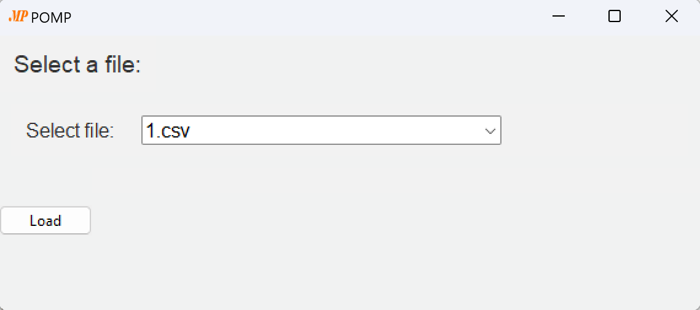
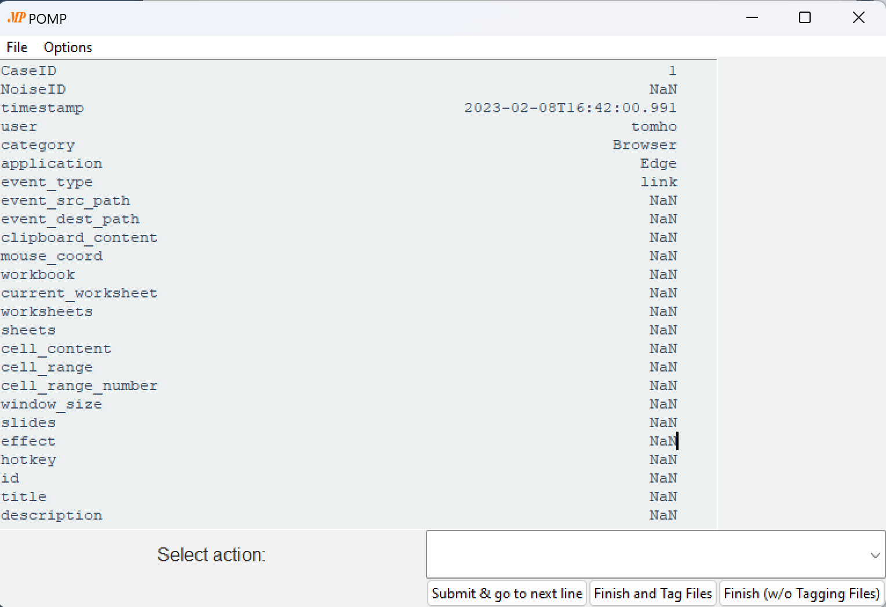
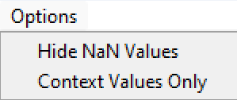
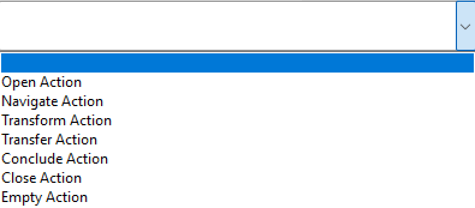
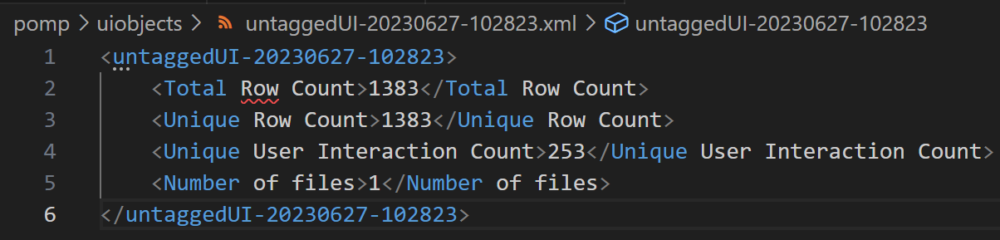

Installation¶
Installation¶
To install POMP, first you have to pull/clone/fork the repository
Afterwards, you have to install all requirements using pip or install all libraries into a conda environment using e.g. Anaconda.
() $ pip install -r requirements.txt
Adding Files¶
When the libraries are installed and before you run the tool you can and should add your logs in the folder logs/pompTagged. The files in this folder will be displayed in the selection window of the POMP tagging tool.
Note! The files have to be in .csv or .xes format. The tool currently only supports logs created from smartRPA by Agostinelli et al [1] or Action Logger by Leno et al [2].
Usage¶
The tool can be started with running the main file. Make sure you are in the correct repository, when running the command.
() $ python main.py
File Selection¶
The tool will start and display a file selection. This is presented in the following figure. Now you can select the file you want tag. After selecting the file from the drop-down menu, which displays all files from the folder logs/pompTagged, you can press the load button. During the loading process the tool will go through the file and check if the file was tagged already.
If the file was tagged before and all rows have been tagged with a category from the POMP taxonomy, the following text is displayed: All rows in selected file have been tagged. To remove tags you have to open the .csv file manually.
Tagging Method¶
When the file is loaded a single user interaction is shown. The interaction is shown as a list of all its parameters, i.e. all parameters the log file provides. The application should look as displayed in the following figure.
To ease the use of this screen you can hide all unnecessary parameters. To do so you open the options menu and you can select Hide NaN or Context Values only, see the following figure. The ‘Hide NaN’ values option will remove all empty values from the screen and shorten the list of parameters presented. The ‘Context Values only’ option will remove all values that are not context parameters. As defined in the original paper the context values are all parameters describing the object a user is interacting with. The tool is currently limited to the context parameters from [1] and [2].
After reviewing the parameters of the action you can decide on the action type. To select the action type the drop down menu on the bottom right is used. The menu presents all options from the POMP categories, see the next figure.
After selecting the action you have two possible choices to tag the file and one to aboard the tagging process, see the following explanation:
Submit & go to next line: This button stores the tag and displays the next untagged action from the user interaction log. You can repeat this until all untagged, unique actions have a POMP tag assigned. Note! Only if you store the tags by clicking the second button (Finish and Tag files) the tags will be stored in the .csv file.
Finish and Tag files: This button will use the tagged actions and assign the same tag to all equal user actions. An equal user action is every action with the same context parameters. Note! Only this button does store the tags into the .csv or .xes file.
Finish (w/o Tagging Files): This button does discard all changes you have done to the log and will not store the changes into your file.
Some more functions¶
We have added two useful Python functions for working with user interaction logs:
Running python concat.py will create a single file from all log files stored in the folder that is specified in the concat.py file, e.g. logs/uilogs’.
() $ python stats.py
Running python stats.py will provide you with a terminal response about the files in the folder logs/uilogs. Note! This folder is stored as constant in the const.py as variable named path_to_untagged.
Next to the terminal response, there will be an .xml file and a .pickle file stored in the folder uiobjects. The .xml file contains the stats of the processed files, see the last figure. The .pickle file contains a set-type Python object that can be used for future processing, especially for time consuming operations, e.g. calculation of all unique user actions from long user interaction logs. The .pickle can be loaded again. If the folder uiobjects, which should contain the .xml and .pickle file, doe
Literature¶
[1] Simone Agostinelli, Marco Lupia, Andrea Marrella, and Massimo Mecella. Smartrpa: A tool to reactively synthesize software robots from user interface logs. In Selmin Nurcan and Axel Korthaus, editors, Intelligent Information Systems, volume 424 of Lecture Notes in Business Information Processing, pages 137–145. Springer International Publishing and Imprint Springer, Cham, 2021.
[2] V. Leno, A. Polyvyanyy, M. La Rosa, M. Dumas, and Fabrizio Maria Maggi. Action logger: Enabling process mining for robotic process automation. In Proceedings of the Dissertation Award, Doctoral Consortium, and Demonstration Track at BPM 2019, volume 2420 of CEUR Workshop Proceedings, page 5. CEUR-WS, 2019